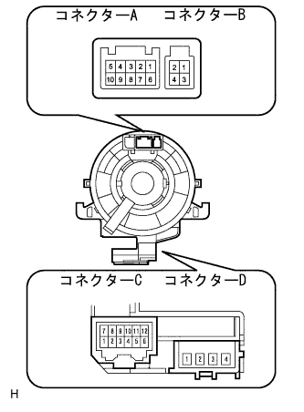

Spiral Cable Sub-assembly Inspection |
| 1. Spiral Cable Sub-assembly Inspection |
Set the spiral cable to the center position. (see)
 |
Using SST (Toyota electrical tester), measure the resistance between the terminals of the spiral cable under the following conditions.
After centering the spiral cable, perform the inspection at the position turned 2.5 turns clockwise and at the position turned 2.5 turns counterclockwise.
Set the spiral cable to the position rotated 2.5 turns clockwise from the center position, and measure while rotating it 5.0 turns counterclockwise.
| Tester Connection | Condition | Standard |
|---|---|---|
| A4 - C11 | Always | Below 1 Ω |
| A6 - C2 | Always | Below 1 Ω |
| B1 - C7 | Always | Below 1 Ω |
| B3 - C1 | Always | Below 1 Ω |
| B4 - C2 | Always | Below 1 Ω |